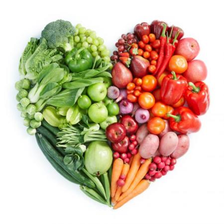
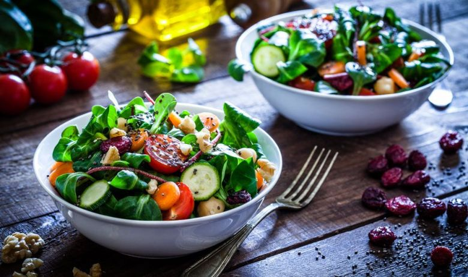

Seguir una dieta equilibrada y realizar ejercicio físico diariamente es fundamental para disfrutar de un estilo de vida saludable y sentirse
bien con uno mismo. A día de hoy se hace un especial hincapié en este asunto y se trata de informar y convencer a la gente de lo necesario
que resulta comer bien, hacer ejercicio y dejar de lado el sedentarismo. Una alimentación saludable y la práctica de ejercicio físico es la
mejor combinación para disfrutar de un estado sano, tanto físico como mental. Además es la manera más eficaz de combatir todo tipo de
trastornos y enfermedades peligrosas como la obesidad y el sobrepeso, que más adelante se pueden ampliar a otras enfermedades como las
cardiovasculares, la hipertensión, la diabetes o el colesterol entre muchas otras.
¿En qué consiste una alimentación saludable y equilibrada?
Una dieta saludable se basa en comer la proporción correcta de los alimentos pertenecientes a los diferentes grupos alimenticios, y es
fundamental para disfrutar de un estilo de vida saludable y reducir los posibles riesgos de sufrir cualquier tipo de enfermedad. En nuestra
dieta diaria se puede incluir todo tipo de alimentos de los diferentes niveles: hortalizas, frutas, aceites, lácteos, pescados, carnes, huevos,
cereales, azúcares, etc. Los expertos aseguran que no hay alimentos malos, sino dietas poco saludables. Una dieta equilibrada consiste tal y
como su propio nombre indica, en comer una adecuada proporción de cada alimento de manera continuada en el tiempo. La comida saludable,
por lo general, es baja en calorías y alta en nutrientes en comparación con otras comidas, y el ejercicio físico regular quema las calorías extras
para mantener en buen estado físico.
Página Principal
Actividad Física
-

-

-
-
